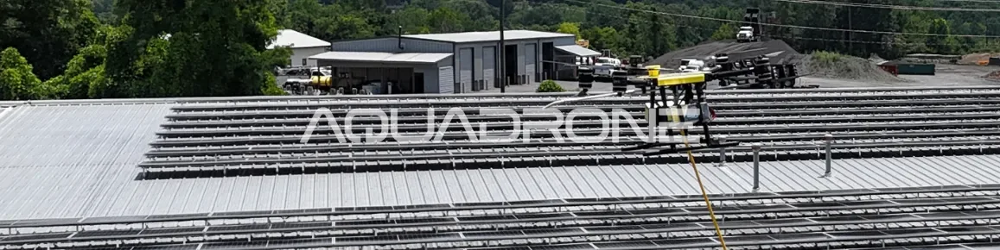

11/09/25
ניקוי פאנלים סולאריים באמצעות רחפנים
מערכות סולאריות הפכו בשנים האחרונות לחלק בלתי נפרד ממערכות אנרגיה מסחריות, ציבוריות ופרטיות. אך כמו כל מערכת חיצונית, גם פאנלים סולאריים דורשים תחזוקה כדי לשמור על ביצועיהם לאורך זמן. לכלוך מצטבר – גם כזה שאינו נראה לעין — מפחית את כמות האור הנקלטת, ומוביל לירידה ביעילות המערכת ולעיתים אף לנזק פיזי. בעזרת רחפנים ניתן לבצע ניקוי מדויק ובטוח גם במיקומים מאתגרים, תוך שמירה על תקני בטיחות ותחזוקה מתקדמים.
למה חשוב לנקות פאנלים סולאריים?
לכלוך על פני הפאנלים יוצר שכבת חסימה שמקטינה את כמות קרני השמש הנקלטות. המשמעות: ירידה ישירה בתפוקת החשמל. גם שכבה דקה של אבק מדברי, לשלשת ציפורים, גרגרי חול, שומנים או מזהמים עירוניים – עשויה להפחית את היעילות ב־40% ואף יותר. מעבר לכך, הצטברות לכלוך מייצרת הבדלים נקודתיים בטמפרטורת התא (hot spots), שעם הזמן עלולים לגרום נזק בלתי הפיך לתאים עצמם.
מכיוון שפאנלים מותקנים לרוב בגובה, על גגות, או על שטחים פתוחים רחבי ידיים — הגישה אליהם מורכבת ולעיתים מסוכנת. לכן, חשוב לבחור בפתרון שמאפשר גם תחזוקה איכותית, גם בטיחות מרבית וגם שמירה על תקינות הציוד לאורך שנים.

סאם ריינולדס – מנהל אופרציות
הדרך היחידה לוודא שההשקעה שלכם משתלמת היא לטפל בה כמו בכל מערכת קריטית עם תחזוקה מדויקת ויעילה.
היתרונות של ניקוי פאנלים בעזרת רחפן:
-
- ניקוי באמצעות רחפן מעניק מענה למספר אתגרים שמאפיינים תחזוקה סולארית:
- מאפשר גישה בטוחה לאזורים גבוהים או לא נגישים, ללא צורך בעובדים בגובה.
- מבטיח פיזור אחיד של מים וסבון בלחץ מבוקר, שמנקה מבלי להזיק למשטח.
- עושה שימוש במים מסוננים באיכות ללא מינרלים, אבנית או מזהמים שנותרים על הזכוכית.
- תומך בשימוש בחומרי ניקוי ייעודיים לפאנלים סולאריים, שאינם פוגעים בציפוי העדין של הזכוכית.
- חוסך זמן עבודה וכוח אדם, במיוחד כשמדובר בשדות סולאריים גדולים או גגות מורכבים.
באיזו תדירות כדאי לנקות?
-
- התדירות תלויה בסביבה שבה מותקנים הפאנלים:
- באזורים עירוניים או סמוך לכבישים – מומלץ לפחות פעמיים בשנה.
- באזורים מדבריים או חקלאיים עם רמות אבק גבוהות – ייתכן צורך בניקוי רבעוני.
- באזורים לחים עם צמחייה גבוהה – מומלץ לבצע בדיקה תקופתית והסרה של עובש/אצות.
- לאחר סופות חול, גשמים בוציים או עונות מעבר – מומלץ לנקות באופן מיידי כדי לשמור על שקיפות מלאה של המשטח.
לפרטים נוספים על שירותי ניקוי הפאנלים הסולאריים שלנו בקרו בעמוד הסולארי וגגות שלנו